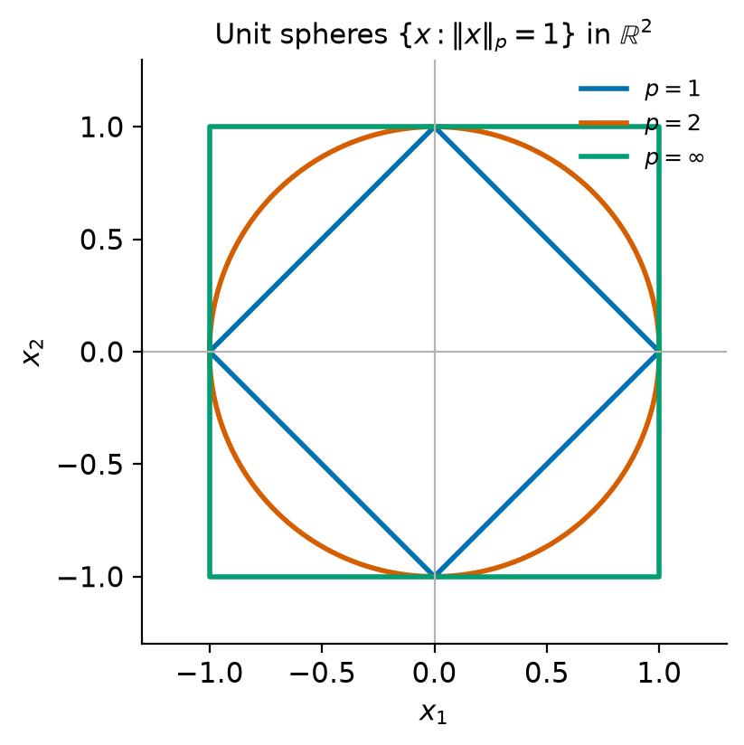
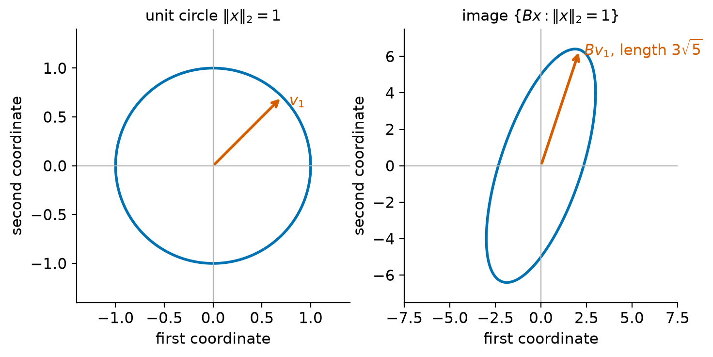

1. Matrix computations, orthogonality, and norms#
Numerical linear algebra studies how to solve the basic problems of linear algebra (linear systems, least-squares problems, eigenvalue problems and singular value problems) on computers that store only finitely many digits and that are much faster at some patterns of arithmetic than at others. Before we can analyze any algorithm we need three pieces of vocabulary. The first is the matrix product, viewed in several equivalent ways, together with its cost. The second is orthogonality, because orthogonal transformations are the building blocks of the most reliable algorithms in the subject. The third is the family of vector and matrix norms, the rulers with which we measure the size of errors, residuals and perturbations.
Most of this chapter will be familiar in outline from a first course in linear algebra. The emphasis here is different: we care about how many operations a computation takes, which formulation of a product maps well onto modern hardware, which transformations can be applied without magnifying errors, and which norms can be computed cheaply.
Learning objectives
After working through this chapter you should be able to:
interpret a matrix product in the inner-product, column, and outer-product views, and use block partitioning to reason about it;
count the floating-point operations of basic matrix computations and explain why the observed speed of a computation also depends on data movement;
state and prove the basic properties of orthogonal matrices, and construct Householder reflectors and Givens rotations that introduce zeros into a vector;
work with vector \(p\)-norms, their equivalence constants, and Hölder’s inequality;
derive the formulas for the induced 1-, 2- and \(\infty\)-norms, relate the Frobenius norm to the 2-norm, and explain unitary invariance;
verify all of the above numerically with NumPy.
1.1. Matrix products and their cost#
1.1.1. Three views of the product#
Definition 1.1 (Matrix product)
Let \(A \in \R^{m\times k}\) and \(B \in \R^{k\times n}\). The product \(C = AB \in \R^{m\times n}\) has entries
The formula (1.1) can be read in three ways, and each is useful. Write \(a_\ell\) for the \(\ell\)th column of \(A\), \(\tilde a_i^T\) for the \(i\)th row of \(A\), and similarly \(b_j\) and \(\tilde b_\ell^T\) for the columns and rows of \(B\).
Inner-product view. The entry \(c_{ij} = \tilde a_i^T b_j\) is the inner product of row \(i\) of \(A\) with column \(j\) of \(B\).
Column view. Column \(j\) of \(C\) is a linear combination of the columns of \(A\) with coefficients taken from column \(j\) of \(B\):
Outer-product view. The product is a sum of \(k\) rank-one matrices:
The column view is the natural language for subspaces. Because every column of \(AB\) is a combination of columns of \(A\), we get the following facts at once.
Proposition 1.1 (Range and rank of a product)
For \(A\in\R^{m\times k}\) and \(B\in\R^{k\times n}\), \(\range(AB) \subseteq \range(A)\), and \(\rank(AB) \le \min\{\rank(A), \rank(B)\}\).
Proof. The inclusion is (1.2). It gives \(\rank(AB)\le\rank(A)\). Applying the same argument to \((AB)^T = B^TA^T\) gives \(\rank(AB) = \rank(B^TA^T) \le \rank(B^T) = \rank(B)\).
The outer-product view (1.3) shows that the product of an \(m\times k\) and a \(k\times n\) matrix has rank at most \(k\), whatever \(m\) and \(n\) are. Storing \(A\in\R^{m\times k}\) and \(B\in\R^{k\times n}\) instead of their product costs \(k(m+n)\) numbers rather than \(mn\), which is the starting point for low-rank approximation (Chapter 2) and for randomized algorithms (Chapter 12).
Example 1.1 (The three views on a small product)
Let
The inner-product view gives \(c_{11} = 1\cdot 2 + 2\cdot 1 = 4\). The column view gives the first column of \(C\) as \(2a_1 + 1a_2 = (2,0,6)^T + (2,1,0)^T = (4,1,6)^T\). The outer-product view writes
All three views give the same matrix, as they must. What differs is the order in which the \(mnk = 12\) multiplications are carried out.
1.1.2. Block matrices#
If \(A\) and \(B\) are partitioned into blocks whose sizes are compatible, the product can be computed blockwise with exactly the same formula as for scalars,
provided we keep the order of the factors in each block product, since matrices do not commute. For example, with a \(2\times 2\) partitioning,
Block partitioning is used constantly in proofs, for instance in the inductive proofs of the Cholesky factorization and the Schur decomposition later in the course. It is equally important in practice, as we now explain.
1.1.3. Counting operations#
We measure arithmetic work in flops: one flop is one floating-point addition, subtraction, multiplication or division.
Proposition 1.2 (Cost of matrix products)
Computing \(y = Ax\) for \(A\in\R^{m\times n}\) by (1.1) takes \(m(2n-1)\) flops. Computing \(C = AB\) for \(A\in\R^{m\times k}\) and \(B\in\R^{k\times n}\) takes \(mn(2k-1)\) flops. For square matrices of order \(n\) the latter is \(2n^3 - n^2\) flops.
Proof. Each of the \(mn\) entries of \(C\) is an inner product of length \(k\), which takes \(k\) multiplications and \(k-1\) additions. The matrix-vector product is the case \(n=1\) with the roles of the dimensions renamed.
We usually keep only the leading term and say that a matrix-matrix product costs \(2mnk\) flops, or \(2n^3\) for square matrices. The order in which a chain of products is evaluated can change the cost dramatically: for \(A, B\in\R^{n\times n}\) and \(x\in\R^n\), computing \((AB)x\) costs about \(2n^3\) flops, whereas \(A(Bx)\) costs about \(4n^2\) (Exercise 1.2).
1.1.4. Flops are not the whole story#
Two algorithms with the same flop count can run at very different speeds. On a modern processor an arithmetic operation is far cheaper than moving a number from main memory into a register, so the speed of a computation depends on how often each number fetched from memory is reused. Linear algebra libraries organize their work around three levels of the Basic Linear Algebra Subprograms (BLAS).
Level |
Typical operation |
Flops |
Data |
Flops per datum |
|---|---|---|---|---|
1 |
\(y \leftarrow \alpha x + y\) |
\(2n\) |
\(3n\) |
\(\bigO(1)\) |
2 |
\(y \leftarrow Ax + y\) |
\(2n^2\) |
\(n^2\) |
\(\bigO(1)\) |
3 |
\(C \leftarrow AB + C\) |
\(2n^3\) |
\(4n^2\) |
\(\bigO(n)\) |
Only level 3 performs asymptotically more arithmetic than data movement. A level-3 routine partitions the matrices into blocks small enough to stay in fast cache memory and applies the block formula above, so that each number loaded from memory takes part in many operations. This is why algorithms in libraries such as LAPACK [Anderson et al., 1999] are reorganized, whenever possible, so that most of their flops occur in matrix-matrix products.
In the lab notebook you will time a triple loop written in Python against
NumPy’s A @ B, which calls an optimized level-3 BLAS routine. Both perform
\(2n^3\) flops up to lower-order terms. The measured ratio of their run times
is large, but it is an observation about one machine, one BLAS library and
one interpreter, not a property of the algorithms; the flop count is the
machine-independent quantity.
Remark 1.1 (Fast matrix multiplication)
The count \(2n^3\) is not a lower bound. Strassen’s algorithm [Strassen, 1969] multiplies \(2\times2\) block matrices with seven block products instead of eight and, applied recursively, uses \(\bigO(n^{\log_2 7}) \approx \bigO(n^{2.81})\) flops. It is used in some libraries for very large matrices. Its rounding errors satisfy a normwise bound but not the stronger componentwise bound enjoyed by the conventional algorithm [Higham, 2002] (Chapter 23), which is one reason why the conventional algorithm remains the default.
Check your understanding
Let \(u, v\in\R^n\) be nonzero. What is the rank of \(uv^T\), what is its range, and how many flops does it take to form it? How many flops does it take to compute \((uv^T)x\) if you first form \(uv^T\), and how many if you instead compute \(u(v^Tx)\)?
Answer. The rank is one and the range is \(\Span\{u\}\). Forming \(uv^T\) takes \(n^2\) multiplications. Then \((uv^T)x\) costs another \(2n^2-n\) flops, while \(u(v^Tx)\) costs \(2n-1\) flops for the inner product plus \(n\) multiplications, that is \(3n-1\) flops in total.
1.2. Orthogonality#
1.2.1. Orthogonal vectors and matrices#
Definition 1.2 (Orthogonality)
Vectors \(x,y\in\R^n\) are orthogonal if \(x^Ty = 0\). A set of vectors \(\{q_1,\dots,q_k\}\) is orthonormal if \(q_i^Tq_j = \delta_{ij}\) for all \(i\) and \(j\). A square matrix \(Q\in\R^{n\times n}\) is orthogonal if \(Q^TQ = I\). A rectangular matrix \(Q\in\R^{m\times n}\) with \(m\ge n\) has orthonormal columns if \(Q^TQ = I_n\).
For a square matrix, \(Q^TQ = I\) implies that \(Q\) is invertible with \(Q^{-1} = Q^T\), so also \(QQ^T = I\): the rows of an orthogonal matrix are orthonormal as well. For a rectangular \(Q\in\R^{m\times n}\) with orthonormal columns and \(m>n\), however, \(QQ^T \neq I_m\). Instead \(QQ^T\) is the orthogonal projector onto \(\range(Q)\), an object we study in Chapter 7.
Proposition 1.3 (Properties of orthogonal matrices)
Let \(Q\in\R^{n\times n}\) be orthogonal. Then
\((Qx)^T(Qy) = x^Ty\) and \(\|Qx\|_2 = \|x\|_2\) for all \(x,y\in\R^n\);
\(\det Q = \pm1\);
every eigenvalue \(\lambda\in\C\) of \(Q\) satisfies \(|\lambda| = 1\);
if \(Q_1\) and \(Q_2\) are orthogonal, so is \(Q_1Q_2\).
Property 1 also holds for rectangular \(Q\) with orthonormal columns.
Proof. (1) \((Qx)^T(Qy) = x^TQ^TQy = x^Ty\); take \(y=x\) for the norm. Only \(Q^TQ=I\) was used, so the argument applies to rectangular \(Q\) with orthonormal columns. (2) \(1 = \det(Q^TQ) = \det(Q)^2\). (3) If \(Qx = \lambda x\) with \(0\ne x\in\C^n\), then \(x^*Q^TQx = x^*x\) because \(Q\) is real, while \(x^*Q^TQx = (Qx)^*(Qx) = |\lambda|^2 x^*x\). Hence \(|\lambda|=1\). (4) \((Q_1Q_2)^T(Q_1Q_2) = Q_2^TQ_1^TQ_1Q_2 = Q_2^TQ_2 = I\).
Geometrically, orthogonal matrices are exactly the linear maps that preserve lengths and angles. The two families that numerical algorithms use to introduce zeros are reflections and plane rotations.
1.2.2. Householder reflectors#
Definition 1.3 (Householder reflector)
For a nonzero \(v\in\R^m\), the Householder reflector determined by \(v\) is
Proposition 1.4 (Properties of Householder reflectors)
The matrix \(H\) in (1.4) is symmetric and orthogonal, and \(H^2 = I\). It maps \(v\) to \(-v\) and fixes every vector orthogonal to \(v\), so it is the reflection across the hyperplane \(v^\perp=\{x : v^Tx = 0\}\). Its eigenvalues are \(-1\) (once) and \(1\) (\(m-1\) times), and \(\det H = -1\).
Proof. Symmetry is clear. Let \(P = vv^T/(v^Tv)\); then \(P^2 = P\), so \(H^2 = I - 4P + 4P^2 = I\), and with \(H^T = H\) this gives \(H^TH = I\). Next, \(Hv = v - 2v = -v\), and if \(v^Tw = 0\) then \(Hw = w\). Choosing an orthonormal basis of \(v^\perp\) and adding \(v/\|v\|_2\) gives an orthonormal basis of eigenvectors with eigenvalues \(1,\dots,1,-1\), and the determinant is their product.
The key use of reflectors is to map a given vector onto a multiple of the first coordinate vector \(e_1\), which zeros all of its other entries.
Theorem 1.1 (Zeroing a vector with a reflector)
Let \(0\ne x\in\R^m\), choose \(\alpha\in\{\|x\|_2, -\|x\|_2\}\) with \(x\ne\alpha e_1\), and set \(v = x - \alpha e_1\). (Since \(x\neq0\), at least one of the two values qualifies; both do unless \(x\) is a multiple of \(e_1\).) Then \(v\neq0\) and the reflector \(H\) determined by \(v\) satisfies \(Hx = \alpha e_1\).
Proof. The two values \(\pm\|x\|_2e_1\) are distinct because \(x\ne0\), so \(x\) equals at most one of them, and \(v\ne0\) by the choice of \(\alpha\). Because \(\alpha^2 = \|x\|_2^2\) we have \(v^Tv = \|x\|_2^2 - 2\alpha x_1 + \alpha^2 = 2(\|x\|_2^2 - \alpha x_1) = 2v^Tx\). Hence \(Hx = x - 2v\,(v^Tx)/(v^Tv) = x - v = \alpha e_1\).
Mathematically both signs of \(\alpha\) work. Numerically they do not. The first entry of \(v\) is \(v_1 = x_1 - \alpha\), and if \(\alpha\) has the same sign as \(x_1\) and \(|x_1|\approx\|x\|_2\) (the vector is already nearly a multiple of \(e_1\)), this subtraction cancels and loses relative accuracy. The remedy is to choose \(\alpha = -\sign(x_1)\|x\|_2\), so that \(v_1 = x_1 + \sign(x_1)\|x\|_2\) is a sum of two numbers of the same sign. We use the convention \(\sign(0) = 1\), which is what makes the formula below well defined when \(x_1 = 0\).
Algorithm 1.1 (Householder vector)
Input: \(x\in\R^m\), \(x\neq 0\).
Output: \(v\in\R^m\) with \(v_1 = 1\) and \(\beta\in\R\) such that \((I - \beta vv^T)x = \alpha e_1\) with \(|\alpha| = \|x\|_2\).
\(s \leftarrow 1\) if \(x_1\ge 0\), otherwise \(s\leftarrow -1\).
\(\alpha \leftarrow -s\|x\|_2\).
\(v \leftarrow x\); \(v_1 \leftarrow x_1 - \alpha = x_1 + s\|x\|_2\).
\(v \leftarrow v / v_1\) (normalize so that \(v_1 = 1\)).
\(\beta \leftarrow 2/(v^Tv)\).
Normalizing \(v_1=1\) lets libraries store the rest of \(v\) in the zeros that the reflector creates. Applying \(H = I - \beta vv^T\) to a vector \(y\) never requires forming \(H\): compute \(y - \beta v (v^Ty)\), which costs about \(4m\) flops instead of the \(2m^2\) of a general matrix-vector product. The lab demonstrates what goes wrong numerically if the sign in step 2 is reversed (Exercise 1.6).
1.2.3. Givens rotations#
A Givens rotation \(G(i,j,\theta)\in\R^{m\times m}\) is the identity matrix except in rows and columns \(i\) and \(j\), where
It is orthogonal with determinant \(1\) and rotates the \((i,j)\) coordinate plane by the angle \(\theta\) (clockwise, in this sign convention). Applied to \(x\), it changes only entries \(i\) and \(j\): \((Gx)_i = cx_i + sx_j\) and \((Gx)_j = -sx_i + cx_j\). If \(r = \sqrt{x_i^2 + x_j^2} > 0\) and we choose \(c = x_i/r\) and \(s = x_j/r\), then \((Gx)_i = r\) and \((Gx)_j = 0\).
Where a reflector zeros a whole subvector at once, a rotation zeros one entry
at a time. Rotations are preferred when the matrix already has many zeros
that must be preserved, as in the QR algorithm for Hessenberg matrices
(Chapter 10) and when updating a factorization after a
low-rank change. To avoid overflow and underflow in \(x_i^2 + x_j^2\), \(r\)
should be computed as hypot(x_i, x_j), which scales internally.
Warning
A common statement is that “orthogonal transformations do not amplify errors.” The precise statement has two parts. In exact arithmetic, \(\|Q(x+\delta x) - Qx\|_2 = \|\delta x\|_2\), so an orthogonal map does not enlarge perturbations that are already present. In floating-point arithmetic, the computed result of applying a Householder reflector or Givens rotation is the exact result of applying an exactly orthogonal matrix to a slightly perturbed input; in the language of Chapter 4 the operation is backward stable [Higham, 2002] (Chapter 19). Neither statement says that an algorithm built from orthogonal transformations gives an accurate answer to an ill-conditioned problem.
1.3. Vector norms#
Definition 1.4 (Vector norm)
A norm on \(\R^n\) is a function \(\|\cdot\|:\R^n\to\R\) such that for all \(x,y\in\R^n\) and \(\alpha\in\R\),
\(\|x\|\ge0\), and \(\|x\| = 0\) only if \(x = 0\);
\(\|\alpha x\| = |\alpha|\,\|x\|\);
\(\|x+y\|\le\|x\|+\|y\|\) (the triangle inequality).
The most important examples are the \(p\)-norms,
For \(p<1\) the formula does not define a norm because the triangle inequality fails. The case \(p=2\) is the Euclidean norm, \(\|x\|_2 = (x^Tx)^{1/2}\). Figure 1.1 shows the unit spheres of the three norms used most often in numerical analysis.


Figure 1.1 Unit spheres of the 1-, 2- and \(\infty\)-norms in \(\R^2\). The inclusions of the three sets are the inequalities \(\|x\|_\infty\le\|x\|_2\le\|x\|_1\).#
Theorem 1.2 (Hölder’s inequality)
If \(1\le p,q\le\infty\) and \(1/p + 1/q = 1\), then \(|x^Ty| \le \|x\|_p\,\|y\|_q\) for all \(x,y\in\R^n\). The case \(p=q=2\) is the Cauchy–Schwarz inequality \(|x^Ty|\le\|x\|_2\|y\|_2\).
We use Hölder’s inequality without proof; see Golub and Van Loan [2013] (Section 2.2) or Horn and Johnson [2013] (Chapter 5). The triangle inequality for \(\|\cdot\|_p\), \(1<p<\infty\), is Minkowski’s inequality and follows from Hölder’s.
In finite dimensions all norms are equivalent: for any two norms there are constants \(c_1, c_2>0\) with \(c_1\|x\|_a \le \|x\|_b\le c_2\|x\|_a\) for all \(x\). A statement such as “\(x^{(k)}\to x\)” therefore does not depend on the norm. The constants do depend on \(n\), however, and error bounds inherit them.
Theorem 1.3 (Equivalence of the 1-, 2- and \(\infty\)-norms)
For every \(x\in\R^n\),
Each inequality is attained: the left-hand ones by \(x = e_1\) and the right-hand ones by \(x = (1,1,\dots,1)^T\).
Proof. If \(|x_k| = \|x\|_\infty\) then \(\|x\|_\infty^2 = x_k^2 \le \sum_i x_i^2 \le n\|x\|_\infty^2\), which gives the first pair. For the second pair, \(\|x\|_1^2 = \sum_{i,j}|x_i||x_j| \ge \sum_i x_i^2 = \|x\|_2^2\), and the Cauchy–Schwarz inequality applied to the vectors \((|x_1|,\dots,|x_n|)\) and \((1,\dots,1)\) gives \(\|x\|_1 \le \sqrt n\,\|x\|_2\). The third pair follows from \(|x_k|\le\sum_i|x_i|\le n\max_i|x_i|\). The cases of equality are checked directly.
Example 1.2 (Three norms of one vector)
For \(x = (3,-4,0,12)^T\) we have \(\|x\|_1 = 19\), \(\|x\|_2 = \sqrt{169} = 13\) and \(\|x\|_\infty = 12\). The bounds of Theorem 1.3 with \(n=4\) read \(12\le 13\le 24\), \(13\le 19\le 26\) and \(12\le19\le48\).
1.4. Matrix norms#
1.4.1. Induced norms#
The space \(\R^{m\times n}\) is a vector space, so any vector norm on \(\R^{mn}\) is a norm on matrices. For analysis we want more: a bound on how much a matrix can magnify the vectors it acts on.
Definition 1.5 (Induced matrix norm)
Given norms \(\|\cdot\|\) on \(\R^n\) and \(\R^m\), the induced (or operator) norm of \(A\in\R^{m\times n}\) is
We write \(\|A\|_p\) when both vector norms are \(p\)-norms.
The maximum exists because \(x\mapsto\|Ax\|\) is continuous and the unit sphere is compact. That (1.6) is a norm follows directly from the vector norm axioms.
Proposition 1.5 (Properties of induced norms)
Every induced norm satisfies \(\|Ax\|\le\|A\|\,\|x\|\) for all \(x\), \(\|I\| = 1\) when the same vector norm is used on the domain and the codomain of \(I\), and the submultiplicative inequality \(\|AB\|\le\|A\|\,\|B\|\) whenever the product is defined and each factor carries the norm induced by the vector norms on its domain and codomain.
Proof. The first inequality is the definition. \(\|Ix\|/\|x\| = 1\) for every \(x\neq0\). Finally \(\|ABx\|\le\|A\|\,\|Bx\|\le\|A\|\,\|B\|\,\|x\|\); divide by \(\|x\|\) and maximize.
Theorem 1.4 (Formulas for the induced 1-, 2- and \(\infty\)-norms)
For \(A\in\R^{m\times n}\),
where \(\lambda_{\max}(A^TA)\) is the largest eigenvalue of the symmetric positive semidefinite matrix \(A^TA\). In words: the maximum absolute column sum, the maximum absolute row sum, and the square root of the largest eigenvalue of \(A^TA\).
Proof. 1-norm. Let \(\mu = \max_j\sum_i|a_{ij}|\), attained at column \(k\). For any \(x\),
so \(\|A\|_1\le\mu\), and \(x = e_k\) gives \(\|Ae_k\|_1 = \mu = \mu\|e_k\|_1\).
\(\infty\)-norm. This is Exercise 1.3.
2-norm. \(A^TA\) is symmetric, so by the spectral theorem there is an orthogonal \(V\) with \(A^TA = V\Lambda V^T\) and \(\Lambda = \diag(\lambda_1,\dots,\lambda_n)\), \(\lambda_1\ge\dots\ge\lambda_n\). The eigenvalues are nonnegative because \(\lambda_i = v_i^TA^TAv_i = \|Av_i\|_2^2\). For \(\|x\|_2 = 1\) put \(y = V^Tx\), so \(\|y\|_2 = 1\) and
Equality holds for \(x = v_1\), the eigenvector belonging to \(\lambda_1\).
In Chapter 2 we will recognize \(\sqrt{\lambda_i(A^TA)}\) as the singular values \(\sigma_i\) of \(A\), so that \(\|A\|_2 = \sigma_1\): the 2-norm is the length of the longest semi-axis of the ellipsoid \(\{Ax:\|x\|_2 = 1\}\).
Example 1.3 (Norms of a \(2\times2\) matrix)
Let \(B = \begin{bmatrix}3&0\\4&5\end{bmatrix}\). The column sums are 7 and 5, so \(\|B\|_1 = 7\); the row sums are 3 and 9, so \(\|B\|_\infty = 9\). Next,
has eigenvalues \(45\) and \(5\) with eigenvectors \((1,1)^T/\sqrt2\) and \((1,-1)^T/\sqrt2\). Therefore \(\|B\|_2 = \sqrt{45} = 3\sqrt5\approx6.708\), and the unit vector stretched most is \(v_1 = (1,1)^T/\sqrt2\), which is mapped to \(Bv_1 = (3,9)^T/\sqrt2\). Figure 1.2 shows the unit circle and its image, an ellipse with semi-axes \(3\sqrt5\) and \(\sqrt5\).


Figure 1.2 The matrix \(B\) of Example 1.3 maps the unit circle to an ellipse. The induced 2-norm \(\|B\|_2 = 3\sqrt5\) is the length of the longest semi-axis, attained at \(x = v_1\).#
1.4.2. The Frobenius norm#
Definition 1.6 (Frobenius norm)
The Frobenius norm of \(A\in\R^{m\times n}\) is
The Frobenius norm is the 2-norm of \(A\) regarded as a vector in \(\R^{mn}\). It costs only \(2mn\) flops to evaluate, whereas the 2-norm requires an eigenvalue or singular value computation. It is not an induced norm: every induced norm has \(\|I\| = 1\), but \(\|I_n\|_F = \sqrt n\).
Theorem 1.5 (Frobenius and 2-norms)
For \(A\in\R^{m\times n}\) with \(r = \rank(A)\) and any \(B\in\R^{n\times p}\),
\(\|AB\|_F\le\|A\|_2\,\|B\|_F\le\|A\|_F\,\|B\|_F\);
\(\|A\|_2\le\|A\|_F\le\sqrt r\,\|A\|_2\).
Proof. (1) With \(b_j\) the columns of \(B\), \(\|AB\|_F^2 = \sum_j\|Ab_j\|_2^2\le\|A\|_2^2\sum_j\|b_j\|_2^2 = \|A\|_2^2\|B\|_F^2\). The second inequality follows from the first half of (2).
(2) The eigenvalues \(\lambda_1\ge\dots\ge\lambda_n\ge0\) of \(A^TA\) satisfy \(\|A\|_F^2 = \trace(A^TA) = \sum_i\lambda_i\) and \(\|A\|_2^2 = \lambda_1\), so \(\|A\|_2^2\le\|A\|_F^2\). Moreover \(\rank(A^TA) = \rank(A) = r\) (because \(A^TAx = 0\) implies \(\|Ax\|_2^2 = x^TA^TAx = 0\)), and a symmetric matrix of rank \(r\) has exactly \(r\) nonzero eigenvalues. Hence \(\sum_i\lambda_i\le r\lambda_1\).
1.4.3. Unitary invariance#
Theorem 1.6 (Unitary invariance of the 2- and Frobenius norms)
Let \(A\in\R^{m\times n}\), let \(U\in\R^{p\times m}\) have orthonormal columns (\(p \ge m\)) and let \(V\in\R^{n\times n}\) be orthogonal. Then \(\|UAV\|_2 = \|A\|_2\) and \(\|UAV\|_F = \|A\|_F\).
Proof. For every \(x\), \(\|UAVx\|_2 = \|AVx\|_2\) by Proposition 1.3, and as \(x\) ranges over the unit sphere so does \(Vx\); hence \(\|UAV\|_2 = \|A\|_2\). For the Frobenius norm, \(\|UA\|_F^2 = \trace(A^TU^TUA) = \|A\|_F^2\), and \(\|AV\|_F = \|V^TA^T\|_F = \|A^T\|_F = \|A\|_F\) by the same argument.
Unitary invariance is the reason the 2- and Frobenius norms are the natural choices for analyzing algorithms built from orthogonal transformations. The 1- and \(\infty\)-norms are not unitarily invariant (Exercise 1.9).
1.4.4. Norms and eigenvalues#
The spectral radius of a square matrix is \(\rho(A) = \max\{|\lambda| : \lambda \text{ an eigenvalue of } A\}\).
Theorem 1.7 (Spectral radius and norms)
Let \(\|\cdot\|\) be a norm on \(\C^{n\times n}\) that is submultiplicative, \(\|AB\|\le\|A\|\,\|B\|\). Then \(\rho(A)\le\|A\|\) for every \(A\in\C^{n\times n}\).
Proof. Let \(Ax = \lambda x\) with \(x\ne0\) and \(|\lambda| = \rho(A)\), and let \(X = [x,x,\dots,x]\in\C^{n\times n}\). Then \(AX = \lambda X\), so \(|\lambda|\,\|X\| = \|AX\|\le\|A\|\,\|X\|\), and \(\|X\|>0\).
The theorem applies to all induced norms (on \(\C^n\)) and to the Frobenius norm. The inequality can be very weak: \(A = \begin{bmatrix}0&1\\0&0\end{bmatrix}\) has \(\rho(A) = 0\) but \(\|A\|_p = 1\) for every \(p\). It is sharp in a limiting sense: for every \(A\) and every \(\epsilon>0\) there is an induced norm with \(\|A\|\le\rho(A)+\epsilon\) [Horn and Johnson, 2013] (Lemma 5.6.10). The gap between \(\rho(A)\) and \(\|A\|\) reappears in Chapter 9 and Chapter 11, where it separates the long-term behavior of powers \(A^k\) from their transient growth.
Example 1.4 (Small norms do not mean an easy problem)
The Hilbert matrix \(H_n\) has entries \(h_{ij} = 1/(i+j-1)\). For \(n = 10\) its norms are all modest: \(\|H_{10}\|_1 = \|H_{10}\|_\infty \approx 2.929\) (the first row sum \(1+\tfrac12+\dots+\tfrac1{10}\)), \(\|H_{10}\|_2\approx 1.752\) and \(\|H_{10}\|_F\approx1.786\). Yet its smallest eigenvalue is about \(1.1\times10^{-13}\), and the ratio of largest to smallest eigenvalue, which for this symmetric positive definite matrix is the 2-norm condition number \(\kappa_2(H_{10})\), is about \(1.6\times10^{13}\). The size of a matrix says nothing about how close it is to being singular; that is measured relative to its size, as we will see in Chapter 4.
Check your understanding
Why is \(\|A\|_2\le\|A\|_F\) never an equality for the identity matrix \(I_n\) with \(n\ge2\), and for which matrices is it an equality?
Answer. \(\|I_n\|_2 = 1 < \sqrt n = \|I_n\|_F\). By the proof of Theorem 1.5, equality holds exactly when \(A^TA\) has at most one nonzero eigenvalue, that is, when \(\rank(A)\le1\).
1.4.5. Computing norms in practice#
numpy.linalg.norm(x, p) evaluates vector \(p\)-norms, and
numpy.linalg.norm(A, p) with p in 1, 2, numpy.inf, 'fro' evaluates the
matrix norms of this chapter. The 1-, \(\infty\)- and Frobenius norms cost
\(\bigO(mn)\) flops. The 2-norm is computed from the singular values, which
costs \(\bigO(mn\min(m,n))\) flops; for large matrices one estimates it
instead with a few steps of the power method (Chapter 9).
Even the simplest norm must be evaluated with some care in floating point:
squaring entries of size \(10^{200}\) overflows, which is why library routines
rescale internally (Chapter 3).
1.5. Computational laboratory#
The lab notebook for this chapter implements matrix
multiplication in the inner-product, column and outer-product forms and checks
them against A @ B, and it measures the cost of these forms against the
optimized BLAS product. It builds Householder reflectors and Givens rotations
from scratch, verifies orthogonality to within a small multiple of the unit
roundoff, and shows the cancellation that occurs when the wrong sign is used
in Algorithm 1.1. Finally, it computes the norms of this
chapter, checks Theorem 1.4 and
Theorem 1.5 on random matrices, and estimates \(\|A\|_2\) by
sampling the unit sphere, which always underestimates it.
1.6. Summary#
A matrix product can be read entrywise, columnwise or as a sum of rank-one terms; the last two views explain range and rank, and block partitioning explains both inductive proofs and fast library implementations. Flop counts are the machine-independent measure of cost, but speed also depends on data reuse, which is why level-3 BLAS operations dominate numerical software. Orthogonal matrices preserve inner products and 2-norms. Householder reflectors and Givens rotations are orthogonal matrices that introduce zeros, and the sign choice in the reflector avoids cancellation. Norms measure errors; the induced 1-, \(\infty\)- and 2-norms have explicit formulas, the 2-norm is unitarily invariant, and the Frobenius norm is a cheap unitarily invariant upper bound for it.
1.7. Further reading#
Trefethen and Bau [1997] treat this material in Lectures 1–3, and Golub and Van Loan [2013] in Chapters 1 and 2, including the organization of algorithms around the BLAS and a thorough discussion of norms. The rounding errors of matrix multiplication and of fast methods such as Strassen’s are analyzed by Higham [2002] (Chapters 3 and 23). Horn and Johnson [2013] (Chapter 5) is the standard reference for vector and matrix norms. The original sources for reflectors and rotations are Householder [1958] and Givens [1958].
1.8. Exercises#
Exercise 1.1 (Concept: rank of a product)
Give \(2\times2\) matrices \(A\) and \(B\), both of rank one, such that \(AB = 0\). Then give \(2\times2\) matrices of rank one with \(\rank(AB) = 1\). Explain, using the column view, what determines which case occurs for rank-one matrices \(A = xy^T\) and \(B = wz^T\).
Exercise 1.2 (Computation: the order of evaluation)
Let \(A,B\in\R^{n\times n}\) and \(x\in\R^n\). Count the flops needed to evaluate \(ABx\) as \((AB)x\) and as \(A(Bx)\). Then let \(A\in\R^{m\times k}\), \(B\in\R^{k\times n}\), \(C\in\R^{n\times p}\) and find a condition on \(m,k,n,p\) under which \((AB)C\) is cheaper than \(A(BC)\) (count only the leading terms \(2\times\) the products of dimensions).
Solution to Exercise 1.2 (Computation: the order of evaluation)
\((AB)x\) costs \(n^2(2n-1)\) flops for \(AB\) plus \(n(2n-1)\) for the product with \(x\), about \(2n^3\) in total. \(A(Bx)\) costs two matrix-vector products, \(2n(2n-1)\approx4n^2\) flops. For the general chain, \((AB)C\) costs \(2mkn + 2mnp\) and \(A(BC)\) costs \(2knp+2mkp\), so \((AB)C\) is cheaper when \(mn(k+p) < kp(m+n)\), equivalently \(1/k + 1/p < 1/m + 1/n\) after dividing by \(mnkp\).
Exercise 1.3 (Theory: the induced \(\infty\)-norm)
Prove that \(\|A\|_\infty = \max_i\sum_j|a_{ij}|\) for \(A\in\R^{m\times n}\), and deduce that \(\|A\|_\infty = \|A^T\|_1\).
Solution to Exercise 1.3 (Theory: the induced \(\infty\)-norm)
Let \(\mu = \max_i\sum_j|a_{ij}|\), attained at row \(k\). For any \(x\) and any \(i\), \(|(Ax)_i|\le\sum_j|a_{ij}||x_j|\le\|x\|_\infty\sum_j|a_{ij}|\le \mu\|x\|_\infty\), so \(\|A\|_\infty\le\mu\). For equality take \(x_j = \sign(a_{kj})\) (with \(\sign(0)=1\)); then \(\|x\|_\infty = 1\) and \((Ax)_k = \sum_j|a_{kj}| = \mu\). The rows of \(A\) are the columns of \(A^T\), so the formula for \(\|A^T\|_1\) is the same maximum.
Exercise 1.4 (Theory: a bound for the 2-norm)
Prove that \(\|A\|_2\le\sqrt{\|A\|_1\|A\|_\infty}\). Evaluate both sides for the matrix \(B\) of Example 1.3. Hint: use Theorem 1.7 for the matrix \(A^TA\).
Exercise 1.5 (Theory: equivalence constants for matrix norms)
Show that for \(A\in\R^{m\times n}\),
and find matrices that attain two of these four bounds.
Exercise 1.6 (Computation: the sign in the Householder vector)
Take \(x = (1, 10^{-9})^T\). Compute in double precision the Householder vector \(v = x - \alpha e_1\) once with \(\alpha = -\|x\|_2\) (the choice of Algorithm 1.1) and once with \(\alpha = +\|x\|_2\). For each, form \(Hx\) and report the relative error \(\|Hx - \alpha e_1\|_2/\|x\|_2\). Explain the result by computing the first entry of \(v\) by hand.
Exercise 1.7 (Theory: \(2\times2\) orthogonal matrices)
Show that every orthogonal \(Q\in\R^{2\times2}\) is either a rotation \(\begin{bmatrix}c&-s\\s&c\end{bmatrix}\) or a reflection \(\begin{bmatrix}c&s\\s&-c\end{bmatrix}\) with \(c^2+s^2=1\). Show that every such reflection is a Householder reflector, and determine the vectors \(v\) in (1.4) that produce it.
Exercise 1.8 (Concept: norms that are not induced)
Show that the max-entry norm \(\|A\|_{\max} = \max_{i,j}|a_{ij}|\) is a norm on \(\R^{n\times n}\) that is not submultiplicative for \(n\ge2\). Show that \(\sqrt n\,\|A\|_{\max}\) is not submultiplicative either, but \(n\|A\|_{\max}\) is.
Exercise 1.9 (Concept: unitary invariance fails for the 1-norm)
Find an orthogonal \(Q\in\R^{2\times2}\) and a vector \(x\) with \(\|Qx\|_1\ne\|x\|_1\). Then find an orthogonal \(Q\) with \(\|Q\|_1 = \sqrt2\).
Solution to Exercise 1.9 (Concept: unitary invariance fails for the 1-norm)
Let \(Q\) be the rotation by \(45^\circ\), \(Q = \tfrac1{\sqrt2}\begin{bmatrix}1&-1\\1&1\end{bmatrix}\), and \(x = e_1\). Then \(Qx = (1,1)^T/\sqrt2\), so \(\|Qx\|_1 = \sqrt2 \neq 1 = \|x\|_1\). The same \(Q\) has column sums \(\sqrt2\) in absolute value, so \(\|Q\|_1 = \sqrt2\).
Exercise 1.10 (Theory: spectral radius and powers)
Let \(A\in\R^{n\times n}\) and let \(\|\cdot\|\) be an induced norm. Show that if \(\|A\|<1\) then \(A^k\to0\) as \(k\to\infty\). Give an example of a \(2\times2\) matrix with \(\rho(A)<1\) and \(\|A\|_2>1\), and compute \(\|A^k\|_2\) for \(k = 1,\dots,10\). What do you observe?
Exercise 1.11 (Computation: estimating the 2-norm by sampling)
Estimate \(\|A\|_2\) for a random \(50\times50\) matrix by evaluating
\(\|Ax\|_2\) for \(10^5\) random unit vectors \(x\) (normalized Gaussian vectors).
Compare with numpy.linalg.norm(A, 2). Explain why the estimate is always
too small, and why it becomes much worse as the dimension grows. How does the
first step of the power method, \(\|A^TAx\|_2/\|Ax\|_2\), compare?
Exercise 1.12 (Project: blocked matrix multiplication)
Implement \(C = AB\) for square matrices as a triple loop over blocks of size
\(b\), computing each block product with @. For \(n = 1024\), measure the median
run time over several repetitions for \(b = 16, 32, \dots, 1024\) and plot it.
Relate the result to the table of BLAS levels, and state clearly which
aspects of your plot you expect to depend on the machine.